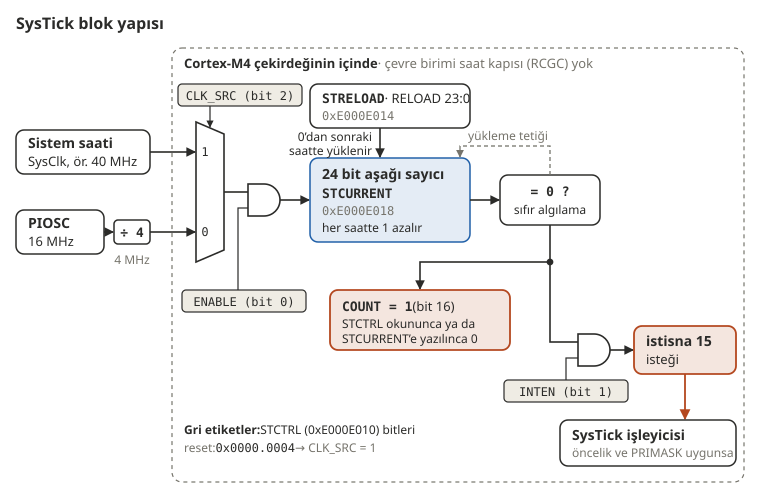
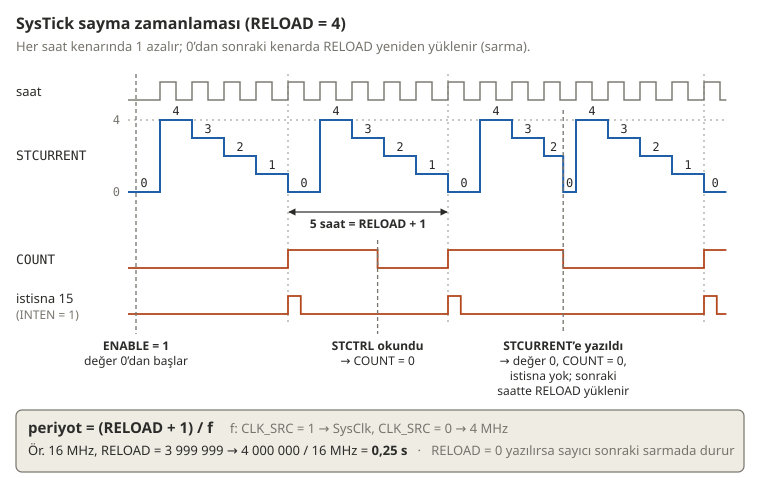
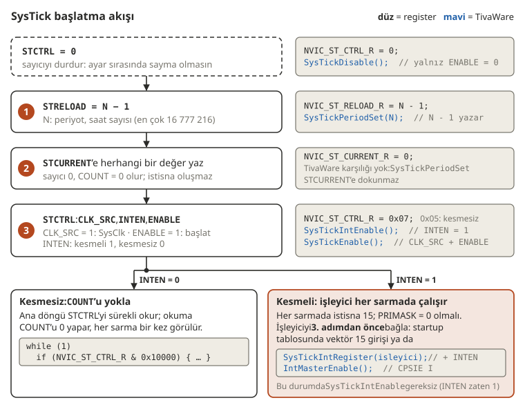
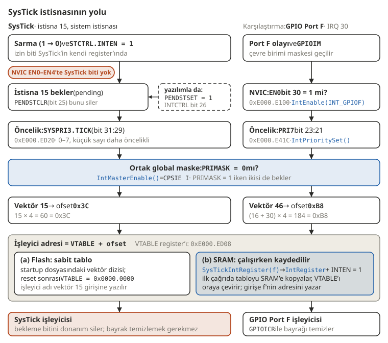
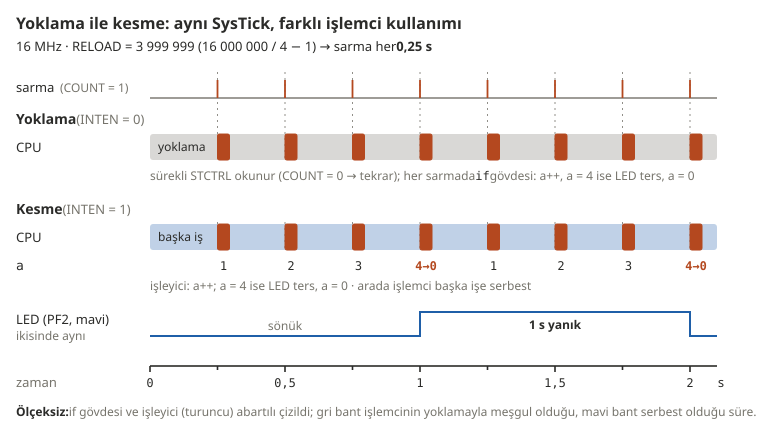

SysTick
SysTick, Cortex-M4 çekirdeğinin içinde bulunan 24 bitlik basit bir zamanlayıcıdır. Saat kapısı açmak, kip seçmek ya da NVIC'te kesme izni vermek gerekmez. Üç register'a üç yazma yeter. Bu yüzden "her 1 ms'de bir" ya da "her 0,25 s'de bir" gibi düzenli bir tik üretmenin en kısa yoludur. Gerçek zamanlı işletim sistemleri (RTOS) de zaman dilimlerini bu zamanlayıcıyla sayar. Bu notta SysTick'in register'larını, süre hesabını, yoklama ve kesmeyle kullanımını ve dersteki yedi projeyi inceleyeceğiz.
Bu notun sonunda öğrenci:
- SysTick'in çekirdeğin bir parçası olduğunu, genel amaçlı zamanlayıcılardan (GPTM) farkını ve hangi işler için seçildiğini açıklayabilir.
- STCTRL (ENABLE, INTEN, CLK_SRC, COUNT), STRELOAD ve STCURRENT register'larının alanlarını ve STCURRENT'e yazmanın, STCTRL'yi okumanın yan etkilerini bilir.
- Periyot = (RELOAD + 1) / f bağıntısıyla istenen süre için RELOAD değerini hesaplayabilir. 24 bit sınırının farklı saatlerde hangi en uzun süreyi verdiğini bulabilir.
- Veri sayfasının 3 adımlı başlatma sırasını register düzeyinde ve TivaWare ile uygulayabilir. SysTick'i COUNT bayrağını yoklayarak ve kesmeyle kullanabilir.
- SysTick'in bir sistem istisnası (istisna 15) olduğunu, önceliğinin SYSPRI3'te tutulduğunu ve işleyicinin (handler; zamanlayıcı ve GPIO kesme notlarında ISR) startup tablosuna ya da
SysTickIntRegisterile RAM tablosuna bağlanabildiğini gösterebilir. - Sarmayı doğru hesaplayan bir ms/µs gecikme fonksiyonu yazabilir. Dersteki kodlardaki hataları ve gereksiz satırları bulabilir.
1. SysTick nedir
Amaç: SysTick'in yongadaki yerini ve neden ayrı bir zamanlayıcı olarak bulunduğunu görmek.
Veri sayfası SysTick'i şöyle tanımlar: Cortex-M4'e tümleşik bir sistem zamanlayıcısı. 24 bitliktir, yazınca temizlenir, aşağı sayar ve sıfırda sarar (§3.1.1, s. 123). Aynı bölümde önerilen kullanımlar şunlardır:
- RTOS tiki: programlanabilir bir hızda (örneğin 100 Hz) kesme üreterek işletim sisteminin zaman dilimlerini sayar.
- Yüksek hızlı alarm: sistem saatiyle çalıştığı için çözünürlüğü bir saat çevrimidir (80 MHz'te 12,5 ns).
- Süre ölçümü: bir işin kaç çevrim sürdüğünü ölçen basit bir sayıcı.
- Süre denetimi: COUNT biti, bir işin belirlenen süre içinde bitip bitmediğini anlamak için kullanılabilir.
SysTick'in register'ları çekirdeğin özel çevre birimi alanındadır (System Control Space, taban 0xE000.E000). Bu alan NVIC, MPU ve FPU register'larıyla aynı yerdir (veri sayfası Bölüm 3 "Cortex-M4 Peripherals", Tablo 3-8):
| Register | Adres | Tür, reset | Başlık dosyası adı | ARM adı |
|---|---|---|---|---|
| STCTRL: denetim ve durum | 0xE000.E010 | RW, 0x0000.0004 | NVIC_ST_CTRL_R | SYST_CSR |
| STRELOAD: yeniden yükleme değeri | 0xE000.E014 | RW, tanımsız | NVIC_ST_RELOAD_R | SYST_RVR |
| STCURRENT: anlık değer | 0xE000.E018 | RWC, tanımsız | NVIC_ST_CURRENT_R | SYST_CVR |
Başlık dosyasındaki adların NVIC_ ile başlaması SysTick'in NVIC'in bir parçası olduğu anlamına gelmez. Register'lar yalnız aynı adres bloğundadır. TivaWare'de aynı adresler inc/hw_nvic.h'de NVIC_ST_CTRL, NVIC_ST_RELOAD, NVIC_ST_CURRENT adlarıyla bulunur. Üç register da yalnız ayrıcalıklı (privileged) kipte erişilebilir ve hizalı 32 bitlik erişimle okunup yazılmalıdır (s. 123, 138). Reset sonrasında işlemci ayrıcalıklı kipte başlar ve ders programları bu kipte kalır, dolayısıyla bu kısıt bizi etkilemez.
SysTick ile GPTM
Zamanlayıcılar notundaki GPTM birimleri SysTick'ten çok daha yeteneklidir. SysTick'i seçmenin nedeni sadeliği ve her Cortex-M4'te aynı olmasıdır:
| SysTick | GPTM (Timer0–5, WTimer0–5) | |
|---|---|---|
| Sayısı | 1 | 6 adet 16/32 bit, 6 adet 32/64 bit |
| Yeri | Çekirdeğin içi, 0xE000.E010 | Çevre birimi alanı (Timer0: 0x4003.0000) |
| Saat kapısı | Yok, her zaman erişilebilir | RCGCTIMER / SysCtlPeripheralEnable gerekir |
| Genişlik, yön | 24 bit, yalnız aşağı | 16/32/64 bit, aşağı ya da yukarı, ön bölücülü |
| Kipler | Yalnız periyodik (sürekli yeniden yükleme) | Tek atım, periyodik, RTC, kenar sayma, kenar zamanlama, PWM |
| Saat kaynağı | Sistem saati ya da PIOSC/4 | Sistem saati (ayrıntı Zamanlayıcılar notunda) |
| Kesme | Sistem istisnası 15. NVIC'te EN biti yok, yalnız INTEN | NVIC kesmesi (Timer0A: kesme 19, EN0 bit 19) |
| Bayrak temizleme | COUNT okununca temizlenir. Kesmede temizlenecek bayrak yok | ISR'de GPTMICR'ye 1 yazılır |
| Taşınabilirlik | ARM'ın çekirdek tanımının parçası, başka üreticilerin Cortex-M4'lerinde de aynı | TI'ya özgü |
Kısacası düzenli bir tik ya da kısa bir gecikme gerekiyorsa SysTick, giriş yakalama, PWM, tek atım ya da 0,2 s'den uzun bir aralık gerekiyorsa GPTM kullanılır. 80 MHz'te SysTick'in en uzun aralığı 0,21 s'dir (Bölüm 3). SysTick'i bir RTOS kullanıyorsa uygulama ona dokunmamalıdır. Uygulamanın kendi zamanlama işleri o durumda GPTM'ye kalır.
2. Yapı ve register'lar
Amaç: SysTick'in iç yapısını ve üç register'ın her bitini tanımak.

STCTRL (ofset 0x010, reset 0x0000.0004)
| Bit | Ad | Tür | Anlamı |
|---|---|---|---|
| 16 | COUNT | RO | 1: son okumadan beri sayıcı 0'a ulaştı. STCTRL okunduğunda ya da STCURRENT'e herhangi bir değer yazıldığında temizlenir. |
| 2 | CLK_SRC | RW | 1: sistem saati, 0: PIOSC/4. Reset değeri 1'dir. |
| 1 | INTEN | RW | 1: sayıcı 0'a ulaşınca SysTick istisnası istenir. 0: kesme yok, durum COUNT'tan izlenir. |
| 0 | ENABLE | RW | 1: sayıcı çalışır. RELOAD'dan 0'a sayar, COUNT'u kurar, INTEN açıksa kesme ister, yeniden yükleyip devam eder ("multi-shot"). |
Bit 15:3 ve 31:17 ayrılmıştır (s. 138–139). Tablodaki maskelerin sayısal değerleri: COUNT = 0x0001.0000 (65 536), CLK_SRC = 0x4, INTEN = 0x2, ENABLE = 0x1. Kesmesiz çalışma için STCTRL'ye 0x05, kesmeli çalışma için 0x07 yazılır. Başlık dosyasında bunların adları NVIC_ST_CTRL_COUNT, _CLK_SRC, _INTEN, _ENABLE'dır.
COUNT'un "okununca temizlenir" olması önemlidir: STCTRL'yi okuyan her satır bayrağı siler. Örneğin NVIC_ST_CTRL_R |= NVIC_ST_CTRL_INTEN; bir oku-değiştir-yaz işlemidir ve o anda kalkmış bir COUNT'u kaybettirir. Veri sayfası hata ayıklayıcının okumasının da COUNT'u temizleyebileceğini belirtir (s. 138, Bölüm 8).
STRELOAD (ofset 0x014, reset tanımsız)
RELOAD alanı bit 23:0'dır, bit 31:24 ayrılmıştır. Sayıcı 0'a ulaştığında STCURRENT'e yüklenecek değeri tutar. Geçerli aralık 0x1 ile 0x00FF.FFFF (16 777 215) arasıdır. Periyot RELOAD + 1 saattir. Veri sayfasının örneğine göre her 100 saatte bir kesme için RELOAD alanına 99 yazılır (s. 140).
- RELOAD = 0: yazılabilir ama "etkisi yoktur", çünkü COUNT ve kesme 1'den 0'a inişte üretilir (s. 140). §3.1.1 bunu şöyle söyler: STRELOAD'u temizlemek sayıcıyı bir sonraki sarmada durdurur (s. 123). Sayıcıyı durdurmanın doğru yolu yine de ENABLE = 0'dır.
- 8 MHz notu: veri sayfası bu register'a doğru erişim için sistem saatinin 8 MHz'ten hızlı olması gerektiğini yazar (s. 140). Sistem saati PIOSC/4 (4 MHz) ya da LFIOSC seçilmişse bu koşul sağlanmaz. CLK_SRC = 0 ile SysTick'in PIOSC/4'ü sayması ise bu koşulu bozmaz, çünkü burada sözü edilen sistem saatidir.
STCURRENT (ofset 0x018, reset tanımsız)
CURRENT alanı bit 23:0'dır ve sayıcının okunduğu andaki değerini verir. Tür "RWC"dir: herhangi bir değer yazmak register'ı 0 yapar ve STCTRL'deki COUNT'u da temizler (s. 141). Yazma SysTick istisnasını tetiklemez (s. 123). Sayıcı 0 olduktan sonraki ilk saatte RELOAD'u yükler. Böylece STCURRENT'e yazmak bir sonraki periyodu tam bir periyot olarak başlatır. TivaWare'in SysTickEnable ve SysTickPeriodSet açıklamaları da aynı şeyi söyler: bu fonksiyonlar sayıcıyı yeniden yüklemez. Hemen yeniden yükleme gerekiyorsa NVIC_ST_CURRENT'e yazılmalıdır (driverlib/systick.c, satır 63–69 ve 210–215).
STRELOAD ve STCURRENT reset sonrasında tanımsızdır (s. 123). Başlatmada STCURRENT'e yazılmazsa ilk periyot RELOAD'a değil, sayıcıda rastgele kalmış değere bağlıdır. Bu değer 224 − 1'e kadar çıkabilir.
3. Sayma ve süre hesabı
Amaç: istenen süreden RELOAD değerini, RELOAD değerinden süreyi bulmak.

Sayıcı RELOAD'dan başlayıp 0'a kadar her değerde bir saat kalır. Bu RELOAD + 1 farklı değer, yani RELOAD + 1 saat eder:
T = (RELOAD + 1) / f · RELOAD = T × f − 1
Burada f, CLK_SRC = 1 iken sistem saati, CLK_SRC = 0 iken 4 MHz'tir. Örnekler: 80 MHz'te 1 ms için RELOAD = 80 000 − 1 = 79 999, 10 ms için 799 999. 16 MHz'te 0,25 s için 3 999 999. TivaWare'in SysTickPeriodSet(N) fonksiyonu periyodu saat sayısı olarak alır ve register'a N − 1 yazar. N 1 ile 16 777 216 arasında olmalıdır (systick.c satır 226–231). SysTickPeriodGet() de RELOAD + 1 döndürür. Bu yüzden API'li kodda "−1" yazılmaz: SysTickPeriodSet(SysCtlClockGet() / 1000) doğrudan 1 ms verir.
En uzun süre ve çözünürlük
RELOAD en çok 0xFF.FFFF olabilir. Bu durumda periyot 224 = 16 777 216 saattir:
| SysTick saati | Nasıl | Çözünürlük (1 saat) | En uzun periyot | 1 ms için RELOAD |
|---|---|---|---|---|
| 4 MHz | CLK_SRC = 0 (PIOSC/4, ±%3) | 250 ns | 4,194 s | 3 999 |
| 16 MHz | Saat kodu yok (PIOSC) ya da kristal, PLL'siz | 62,5 ns | 1,049 s | 15 999 |
| 40 MHz | SYSCTL_SYSDIV_5 | 25 ns | 0,419 s | 39 999 |
| 50 MHz | SYSCTL_SYSDIV_4 | 20 ns | 0,336 s | 49 999 |
| 80 MHz | SYSCTL_SYSDIV_2_5 | 12,5 ns | 0,210 s | 79 999 |
Daha uzun süreler için iki yol vardır: tikleri bir yazılım sayacıyla saymak (ders kodlarındaki a==4 gibi) ya da CLK_SRC = 0 ile 4 MHz'e geçmek. İkincisi sistem saatinden bağımsız bir zaman tabanı verir, ama PIOSC'nin ±%3 doğruluğunu taşır. TivaWare'in SysTickEnable() fonksiyonu CLK_SRC'yi her zaman 1 yapar (systick.c satır 80). PIOSC/4 için STCTRL'ye doğrudan yazmak gerekir. Saatlerin ayrıntısı Sistem Saati ve PLL notunda.
80 MHz'te SysTickPeriodSet(SysCtlClockGet() / 4) (0,25 s) 20 000 000 saat ister. Bu değer 224'ü aşar. TivaWare'deki ASSERT yalnız DEBUG tanımlıyken çalışır. Normal derlemede register'a 19 999 999 = 0x131.2CFF yazılır, üst bitler düşer ve RELOAD 0x31.2CFF = 3 222 783 olur. Periyot 0,25 s yerine yaklaşık 40 ms çıkar. Derleyici ya da donanım hiçbir uyarı vermez. Süreyi saatten hesaplayan kod, sonucun 16 777 216'yı aşmadığını da denetlemelidir.
Ders kodlarındaki süreler
| Proje | Saat | RELOAD | Sarma aralığı | LED değişimi | LED periyodu |
|---|---|---|---|---|---|
hafta07systicnoapinoint, hafta07systicnoapiwithint, systick01kesmesizApisiz, systick01kesmeliApisiz | 16 MHz PIOSC (saat kodu yok) | 15 999 999 | 1 s (±%3) | Her sarmada, 1 s (PF2, mavi) | 2 s |
hafta07systickapiwithint | 40 MHz | SysTickPeriodSet(10000000) → 9 999 999 | 0,25 s | a==4, 1 s (PF2, mavi) | 2 s |
systickapikesmesiz, systickapikesmeli | 40 MHz | SysTickPeriodSet(5000000) → 4 999 999 | 0,125 s | a==4, 0,5 s (PF3, yeşil) | 1 s |
API'siz projelerin RELOAD'u 16 MHz'e göre seçilmiştir. Aynı kod bir saat ayarından sonra çalışırsa süreler kısalır: 40 MHz'te 0,4 s. 80 MHz'te ise 15 999 999 hâlâ 24 bite sığar ama 0,2 s eder.
4. Başlatma adımları
Amaç: SysTick'i veri sayfasının önerdiği sırayla kurmak. Adım numaraları Şekil 3'te, bu bölümde ve örnek kodların yorumlarında aynıdır.
Veri sayfası §3.1.1 (s. 123) STRELOAD ile STCURRENT'in reset sonrasında tanımsız olduğunu hatırlatır ve şu sırayı verir:
- STRELOAD'u yaz: RELOAD = T × f − 1.
- STCURRENT'e herhangi bir değer yaz: sayıcı 0 olur, COUNT temizlenir. İlk periyot tam bir periyot olarak başlar.
- STCTRL'yi ayarla: saat kaynağı (CLK_SRC), kesme (INTEN) ve sayıcıyı açma (ENABLE). Kesmesiz
0x05, kesmeli0x07.
Ders kodları ve bu notun örnekleri bu üç adımın önüne STCTRL = 0 yazmasını koyar. Veri sayfasında numarası olmadığı için burada ön adım denir. Sayıcı zaten çalışıyorsa (örneğin fonksiyon ikinci kez çağrılırsa) ayar bitene kadar durdurur ve yarım ayarla kesme gelmesini önler. Reset sonrasında ENABLE zaten 0'dır, yani ilk çağrıda ön adım zorunlu değildir.

SysTickIntRegister kullanılırsa INTEN'i o kurduğu için SysTickIntEnable gereksizdir.Kesmeli kullanımda işleyici bağlantısı ve öncelik ayarı 3. adımdan önce yapılmalıdır. INTEN ile ENABLE aynı anda 1 olduğu andan itibaren istisna gelebilir. O anda vektör tablosunda hâlâ IntDefaultHandler varsa program onun sonsuz döngüsünde kalır.
Adımların TivaWare karşılığı
| Adım | API'siz | TivaWare (driverlib/systick.c) | Not |
|---|---|---|---|
| Ön adım | NVIC_ST_CTRL_R = 0; | SysTickDisable() | Yalnız ENABLE'ı temizler (satır 99) |
| 1 | NVIC_ST_RELOAD_R = N - 1; | SysTickPeriodSet(N) | −1'i fonksiyon yapar. 1 ≤ N ≤ 16 777 216 |
| 2 | NVIC_ST_CURRENT_R = 0; | Karşılığı yok: HWREG(NVIC_ST_CURRENT) = 0; | API'li ders kodları bu adımı atlar |
| Kesme bağlama | Startup tablosu | SysTickIntRegister(f) | IntRegister(FAULT_SYSTICK, f) + INTEN = 1 (satır 124–129) |
| 3 | NVIC_ST_CTRL_R = 0x07; (ya da 0x05) | SysTickIntEnable() + SysTickEnable() | SysTickEnable CLK_SRC ve ENABLE'ı |= ile kurar (satır 80) |
| Okuma | NVIC_ST_CURRENT_R | SysTickValueGet() | COUNT'u okuyan bir API fonksiyonu yoktur |
5. Kesmesiz kullanım (yoklama)
Amaç: COUNT bayrağıyla, kesme kullanmadan düzenli aralıklarla iş yapmak.
INTEN = 0 iken sayıcı yine çalışır ve her 0'a inişte COUNT'u kurar. Program döngüde STCTRL'yi okur. COUNT 1 ise bir periyot dolmuştur. Okuma bayrağı kendiliğinden temizlediği için ayrıca bir "temizle" satırı gerekmez:
while (1) {
if (NVIC_ST_CTRL_R & NVIC_ST_CTRL_COUNT) { // okuma COUNT'u temizler
GPIO_PORTF_DATA_R ^= 0x04; // bir periyot doldu
}
}Ders kodları aynı testi (NVIC_ST_CTRL_R & 0x10000) == 65536 ya da NVIC_ST_CTRL_R & 0x10000 biçiminde yazar. İkisi de doğrudur: 0x10000 = 65 536. Başlık dosyasındaki adı kullanmak hem okunurluğu artırır hem de sayıyı yanlış yazma olasılığını ortadan kaldırır.
Yoklamanın sakıncaları GPIO kesmeleri notunda anlatılanlarla aynıdır. SysTick'e özgü olanlar şunlardır:
- Bayrak birikmez: COUNT tek bittir. İki STCTRL okuması arası bir periyodu aşarsa iki sarma tek sarma gibi görünür ve süre sessizce kayar.
- İşlemci hep meşguldür: döngü STCTRL'yi sürekli okur. İşlemci uykuya geçirilemez.
- Bayrağı başka bir okuma silebilir: STCTRL'yi okuyan her satır, örneğin
NVIC_ST_CTRL_R |= …ya da başka bir fonksiyondaki bir kontrol, COUNT'u siler. Ana döngü o sarmayı hiç görmez.
Bu sınırlar içinde yoklama basit ve öngörülebilir bir yoldur. Ana döngüde süresi kısa ve belli birkaç iş varsa yeterlidir.
6. Kesmeli kullanım
Amaç: SysTick kesmesinin GPIO ve zamanlayıcı kesmelerinden farkını görmek. Kesmenin genel mekanizması (yığına kaydetme, vektör tablosu, ISR kuralları) Zamanlayıcılar notunun 2. bölümünde anlatılıyor ve burada tekrarlanmıyor. Bu notta işleyici (handler) denen fonksiyon, o notlardaki ISR'dir.
İstisna 15
SysTick bir sistem istisnasıdır, çevre birimi kesmesi (IRQ) değildir. Veri sayfasının istisna tablosunda vektör numarası 15, vektör adresi 0x0000.003C, önceliği programlanabilir olarak yer alır (Tablo 2-8, s. 103–104). Tanımı da şudur: sistem zamanlayıcısı, kesme üretmesine izin verilmişken sıfıra ulaşınca bu istisnayı üretir. Yazılım da INTCTRL register'ıyla aynı istisnayı üretebilir. İşletim sistemleri onu sistem tiki olarak kullanır (s. 103). Bunun pratik sonuçları:
- NVIC'te izin biti yoktur. EN0–EN4 register'ları yalnız kesme 0–138'i (vektör 16 ve üstü) kapsar. SysTick için
IntEnableya da EN0 yazması gerekmez. Kaynaktaki INTEN = 1 yeterlidir. TivaWare'de karşılığıSysTickIntEnable()'dır. - Kesme numarası yoktur. Vektör numarası 15'tir. TivaWare sabiti
INT_…değilFAULT_SYSTICK'tir (inc/hw_ints.h, değeri 15). - Öncelik NVIC'in PRIn register'larında değil, SCB'nin SYSPRI3 register'ındadır.

SysTickIntRegister, IntRegister ile bu girişi yazar ve INTEN'i 1 yapar. IntRegister ilk çağrıda tabloyu SRAM'e kopyalar.Şekil 4'teki geçitleri Zamanlayıcılar notunun üç geçidiyle karşılaştırınca fark açıkça görülür. Timer0A'da GPTMIMR, NVIC EN0 ve PRIMASK açık olmalıdır. SysTick'te yalnız INTEN ve PRIMASK açık olmalıdır.
Öncelik ve PRIMASK
SYSPRI3 (0xE000.ED20) SysTick, PendSV ve Debug önceliklerini tutar. SysTick'in alanı TICK, bit 31:29'dur. Değer 0–7 arasıdır, küçük değer yüksek önceliktir, reset değeri 0'dır (s. 172). Register bayt erişimlidir.
NVIC_SYS_PRI3_R = (NVIC_SYS_PRI3_R & ~NVIC_SYS_PRI3_TICK_M)
| (3u << NVIC_SYS_PRI3_TICK_S); // bit 31:29IntPrioritySet(FAULT_SYSTICK, 3 << 5); // 0x60, üst 3 bitIntPrioritySet, 15 numarası için SYSPRI3'ün en üst baytını yazar (interrupt.c'deki g_pui32Regs tablosu, satır 75–83 ve 539–542). Bu baytın bit 28:24'ü ayrılmış olduğu için yalnız üst 3 bit anlamlıdır. Reset sonrasında SysTick ve bütün kesmelerin önceliği 0'dır. Eşit öncelikte biri ötekini kesemez. İkisi aynı anda bekliyorsa numarası küçük olan, yani SysTick (15) önce çalışır (Zamanlayıcılar notu, Öncelik). RTOS'lar SysTick'e çoğunlukla en düşük önceliği verir. Böylece tik işleyicisi donanım kesmelerini geciktirmez.
PRIMASK bütün programlanabilir öncelikli istisnaları, dolayısıyla SysTick'i de maskeler. Reset değeri 0'dır (s. 85), yani kesmeler açılışta genel olarak açıktır. IntMasterEnable() (CPSIE I) ancak program bir yerde IntMasterDisable() ya da CPSID I kullandıysa gereklidir. Yine de, kesmeye dayanan kodun sonunda bu çağrının bulunması zararsızdır ve niyeti açıkça gösterir.
İşleyiciyi bağlamak
İşleyicinin adresi vektör tablosunun 15. girişine yazılmalıdır. CCS projelerindeki tm4c123gh6pm_startup_ccs.c bu girişi IntDefaultHandler ile doldurur. Bu bir sonsuz döngüdür. İki yol vardır. İkisi GPIO ve zamanlayıcı kesmeleriyle aynıdır (GPIO kesmeleri notu, ISR'yi bağlamak):
| Yol 1: startup tablosu (statik) | Yol 2: SysTickIntRegister (dinamik) | |
|---|---|---|
| Ne yapılır | Dosyanın başına extern void Ad(void); eklenir. // The SysTick handler yorumlu satırda IntDefaultHandler yerine Ad yazılır. | SysTickIntRegister(Ad); çağrılır. Startup dosyasına dokunulmaz. |
| Ne olur | Tablo flash'ta, g_pfnVectors dizisinde kalır. | IntRegister ilk çağrıda flash tablosunu SRAM'deki g_pfnRAMVectors dizisine kopyalar ve VTABLE'ı (0xE000.ED08) bu diziye yönlendirir. Sonra 15. girişe Ad'ı yazar (interrupt.c satır 309–348). Ardından SysTickIntRegister INTEN'i de 1 yapar. |
| Gerekenler | Yalnız startup dosyası. | interrupt.c'nin derlenip bağlanması (proje driverlib.lib'i bağlar) ve bağlayıcı komut dosyasında 1 KB hizalı .vtable bölümü. Ders projelerinin tm4c123gh6pm.cmd dosyasında .vtable : > 0x20000000 satırı vardır. VTABLE'ın 1024 bayt hizası gerekir (s. 107). |
| Bedeli | Yok. | Tablonun kopyası için SRAM (155 giriş × 4 bayt = 620 bayt, 1 KB hizalı). Çalışma anında bir kez kopyalama. |
| Dersteki projeler | hafta07systicnoapiwithint, systick01kesmeliApisiz, hafta07systickapiwithint | systickapikesmeli |
Yol 2 kullanılınca startup tablosundaki 15. giriş artık okunmaz, çünkü VTABLE RAM tablosunu gösterir. İşleyicinin adı ise bir şey ifade etmez: CCS'in TivaWare startup dosyasında zayıf (weak) tanımlar yoktur. SysTick_Handler adında bir fonksiyon yazmak, onu tabloya yazmadıkça hiçbir şeye bağlamaz. Bazı başka araç zincirlerinde bu ad tek başına yeter, burada yetmez.
İşleyicide bayrak
Zamanlayıcı ve GPIO ISR'lerinin ilk işi kaynağın bayrağını (GPTMICR, GPIOICR) temizlemektir. Temizlenmezse kesme hemen yeniden gelir. SysTick'te temizlenecek bir kesme bayrağı yoktur:
- SysTick istisnası "bekliyor" (pending) durumuna geçer. İşlemci işleyiciye girerken durum "etkin" (active) olur (istisna durumları, §2.5.1, s. 102). Bekleme durumu donanımca kalkar.
- COUNT ise ayrı bir durum bitidir ve kesmeyle ilgisi yoktur. Kesmeli çalışmada okunmasına gerek yoktur. Okunmazsa 1 kalır ve zararı yoktur.
Bekleme durumunu yazılımla kaldırmak gerekirse (örneğin SysTick yeniden kurulurken eski bir istek kalmışsa) INTCTRL'de PENDSTCLR (bit 25) kullanılır (s. 161). İşleyici bir periyottan uzun sürerse istisna "etkin ve bekliyor" durumuna geçer ve işleyici biter bitmez yeniden çalışır. İki periyottan uzun sürerse aradaki tikler kaybolur. İşleyici kısa tutulur, paylaşılan değişkenler volatile yapılır (ISR kuralları).
Yazılımla tetikleme
INTCTRL (0xE000.ED04) register'ının PENDSTSET biti (bit 26) yazılınca SysTick istisnası bekliyor durumuna geçer. Okununca istisnanın bekleyip beklemediği görülür. PENDSTCLR (bit 25) bekleme durumunu kaldırır. İkisine aynı anda 1 yazmanın sonucu öngörülemez (s. 160–161).
NVIC_INT_CTRL_R = NVIC_INT_CTRL_PENDSTSET; // SysTick işleyicisini hemen çalıştır
// TivaWare: IntPendSet(FAULT_SYSTICK);Bu yazma sayıcıyı etkilemez. Yalnız işleyiciyi bir kez daha çalıştırır. Ders dışı bir kullanım olarak, işleyiciyi bir sonraki tiki beklemeden denemek ya da tik sayacını elle ilerletmek için yararlıdır. 0 yazılan öteki bitlerin (PENDSV, UNPENDSV, NMISET) etkisi yoktur, bu yüzden düz atama güvenlidir.
Yoklama mı, kesme mi?

| Yoklama (INTEN = 0) | Kesme (INTEN = 1) | |
|---|---|---|
| Kurulum | STCTRL = 0x05, başka bir şey yok | STCTRL = 0x07 + işleyici bağlama (+ öncelik) |
| İşlemci | Sürekli meşgul | Serbest, WFI ile uyuyabilir |
| Kaçırma | Döngü bir periyottan uzun kalırsa sarma kaybolur | İşleyici kısa olduğu sürece kaybolmaz |
| Tepki | Döngünün turu kadar gecikmeli | Kesme giriş süresi kadar (yaklaşık 12 çevrim, Zamanlayıcılar notu) |
| Uygun olduğu yer | Basit gecikme, süre ölçümü, tek işli döngü | Düzenli tik, zaman sayacı, RTOS |
7. Örnekler
Amaç: SysTick'i dört biçimde (API'siz/API'li, yoklama/kesme) kurmak ve bir gecikme kütüphanesi yazmak. Not örneklerinin hepsi clang ile -Wall altında uyarısız derlenir. API'li örnekler TivaWare'in hw_* başlıklarını kullanır, inc/tm4c123gh6pm.h'yi eklemez.
7.1 API'siz, kesmesiz API'siz
Saat kodu yoktur. Sistem saati 16 MHz PIOSC'dir. RELOAD bir sabitten hesaplanır. Saat değişirse yalnız SISTEM_SAATI_HZ değişir. 0,25 s'lik sarmalar sayılır, LED 1 s'de bir değişir. Port F'nin saat kapısından sonra PRGPIO beklenir (GPIO notu).
// SysTick ile yoklama (kesmesiz), API'siz.
// Saat kodu yok: sistem saati reset sonrasındaki 16 MHz PIOSC'dir.
#include <stdint.h>
#include "inc/tm4c123gh6pm.h"
#define SISTEM_SAATI_HZ 16000000u // saat değişirse burası değişir
#define TIK_HZ 4u // 4 bayrak/s, yani 0,25 s'de bir
static void portf_baslat(void)
{
SYSCTL_RCGCGPIO_R |= SYSCTL_RCGCGPIO_R5; // Port F saat kapısı
while ((SYSCTL_PRGPIO_R & SYSCTL_PRGPIO_R5) == 0) { } // birim hazır olsun
GPIO_PORTF_DIR_R |= 0x04; // PF2 (mavi LED) çıkış
GPIO_PORTF_DEN_R |= 0x04; // PF2 sayısal
}
static void systick_baslat(uint32_t reload)
{
NVIC_ST_CTRL_R = 0; // ön adım: sayıcıyı durdur
NVIC_ST_RELOAD_R = reload; // 1. STRELOAD'u yaz
NVIC_ST_CURRENT_R = 0; // 2. STCURRENT'e herhangi bir değer yaz
NVIC_ST_CTRL_R = NVIC_ST_CTRL_CLK_SRC // 3. STCTRL: sistem saati,
| NVIC_ST_CTRL_ENABLE; // INTEN = 0, sayıcı açık
}
int main(void)
{
uint32_t a = 0;
portf_baslat();
systick_baslat(SISTEM_SAATI_HZ / TIK_HZ - 1); // 4 000 000 - 1 -> 0,25 s
while (1)
{
if (NVIC_ST_CTRL_R & NVIC_ST_CTRL_COUNT) // okumak COUNT'u temizler
{
if (++a == 4) // 4 x 0,25 s = 1 s
{
a = 0;
GPIO_PORTF_DATA_R ^= 0x04; // LED 1 s'de bir değişir
}
}
// burada başka iş yapılabilir, ama 0,25 s'den uzun sürmemeli
}
}7.2 API'siz, kesmeli API'siz
Aynı zamanlama, ama sayma işi işleyicide yapılır ve ana döngü boş kalır. Öncelik SYSPRI3'e yazılır, ama tek kesmeli bir programda bu satır isteğe bağlıdır. İşleyici startup dosyasındaki tabloya bağlanır (Yol 1). a işleyicinin içinde static tanımlıdır. g_tik ana döngüyle paylaşılabileceği için volatile'dır.
// SysTick kesmesi, API'siz. İşleyici startup dosyasındaki tablodan bağlanır.
// tm4c123gh6pm_startup_ccs.c'de: extern void SysTick_Handler(void);
// ve "The SysTick handler" satırında IntDefaultHandler yerine SysTick_Handler.
#include <stdint.h>
#include "inc/tm4c123gh6pm.h"
#define SISTEM_SAATI_HZ 16000000u // reset sonrası PIOSC
#define TIK_HZ 4u // 0,25 s
volatile uint32_t g_tik = 0; // işleyici artırır, main okuyabilir
void SysTick_Handler(void) // istisna 15, vektör ofseti 0x3C
{
static uint32_t a = 0;
g_tik++;
if (++a == 4) // 4 x 0,25 s = 1 s
{
a = 0;
GPIO_PORTF_DATA_R ^= 0x04; // PF2
}
// bayrak temizlemek gerekmez: istisna girişte "bekliyor"dan çıkar
}
static void portf_baslat(void)
{
SYSCTL_RCGCGPIO_R |= SYSCTL_RCGCGPIO_R5;
while ((SYSCTL_PRGPIO_R & SYSCTL_PRGPIO_R5) == 0) { }
GPIO_PORTF_DIR_R |= 0x04;
GPIO_PORTF_DEN_R |= 0x04;
}
static void systick_kesme_baslat(uint32_t reload, uint32_t oncelik)
{
NVIC_ST_CTRL_R = 0; // ön adım: durdur
NVIC_ST_RELOAD_R = reload; // 1. STRELOAD
NVIC_ST_CURRENT_R = 0; // 2. STCURRENT
NVIC_SYS_PRI3_R = (NVIC_SYS_PRI3_R & ~NVIC_SYS_PRI3_TICK_M)
| (oncelik << NVIC_SYS_PRI3_TICK_S); // TICK alanı, bit 31:29
NVIC_ST_CTRL_R = NVIC_ST_CTRL_CLK_SRC // 3. STCTRL: sistem saati,
| NVIC_ST_CTRL_INTEN // kesme açık,
| NVIC_ST_CTRL_ENABLE; // sayıcı açık (0x07)
}
int main(void)
{
portf_baslat();
systick_kesme_baslat(SISTEM_SAATI_HZ / TIK_HZ - 1, 3); // öncelik 3
// PRIMASK reset sonrasında 0'dır; NVIC'te SysTick için EN biti yoktur.
while (1)
{
// ana döngü serbest
}
}STCTRL'ye düz atamayla 0x07 yazılır (oku-değiştir-yaz değil). Böylece 3. adım tek yazmadır. Saat kaynağı, kesme ve sayıcı aynı anda açılır.
7.3 API'li, kesmesiz API'li
40 MHz'te SysTickPeriodSet(SysCtlClockGet() / 4) 10 000 000 saat, yani 0,25 s verir. TivaWare'de STCURRENT'i temizleyen ve COUNT'u okuyan fonksiyon olmadığı için bu iki iş HWREG ile yapılır. hw_nvic.h'deki adres ve bit adları kullanılır.
// SysTick ile yoklama, TivaWare. Sistem saati 40 MHz.
#include <stdint.h>
#include <stdbool.h>
#include "inc/hw_memmap.h"
#include "inc/hw_types.h"
#include "inc/hw_nvic.h" // NVIC_ST_CTRL, NVIC_ST_CTRL_COUNT
#include "driverlib/sysctl.h"
#include "driverlib/gpio.h"
#include "driverlib/systick.h"
int main(void)
{
uint32_t a = 0;
SysCtlClockSet(SYSCTL_SYSDIV_5 | SYSCTL_USE_PLL |
SYSCTL_XTAL_16MHZ | SYSCTL_OSC_MAIN); // 40 MHz
SysCtlPeripheralEnable(SYSCTL_PERIPH_GPIOF);
while (!SysCtlPeripheralReady(SYSCTL_PERIPH_GPIOF)) { }
GPIOPinTypeGPIOOutput(GPIO_PORTF_BASE, GPIO_PIN_3); // PF3 (yeşil LED)
SysTickDisable(); // ön adım: durdur
SysTickPeriodSet(SysCtlClockGet() / 4); // 1. RELOAD = 10 000 000 - 1 (0,25 s)
HWREG(NVIC_ST_CURRENT) = 0; // 2. STCURRENT'i temizle (API'de yok)
SysTickEnable(); // 3. CLK_SRC = 1, ENABLE = 1
while (1)
{
if (HWREG(NVIC_ST_CTRL) & NVIC_ST_CTRL_COUNT) // TivaWare'de COUNT okuyan
{ // bir fonksiyon yok
if (++a == 4) // 1 s
{
a = 0;
GPIOPinWrite(GPIO_PORTF_BASE, GPIO_PIN_3,
GPIOPinRead(GPIO_PORTF_BASE, GPIO_PIN_3) ^ GPIO_PIN_3);
}
}
}
}7.4 API'li, kesmeli API'li
80 MHz'te 0,25 s 24 bite sığmaz (Bölüm 3). Bu yüzden RTOS'lardaki gibi kısa bir tik (10 ms, RELOAD = 799 999) seçilir ve tikler sayılır. LED 50 tikte, yani 0,5 s'de bir değişir. İşleyici SysTickIntRegister ile RAM tablosuna yazılır (Yol 2). Önce öncelik ve bağlantı yapılır, en son sayıcı açılır.
// SysTick kesmesi, TivaWare. Sistem saati 80 MHz, tik 10 ms (100 Hz).
// İşleyici SysTickIntRegister ile RAM vektör tablosuna yazılır;
// startup dosyasına dokunmak gerekmez. driverlib.lib bağlanmalıdır.
#include <stdint.h>
#include <stdbool.h>
#include "inc/hw_memmap.h"
#include "inc/hw_types.h"
#include "inc/hw_nvic.h"
#include "inc/hw_ints.h" // FAULT_SYSTICK
#include "driverlib/sysctl.h"
#include "driverlib/gpio.h"
#include "driverlib/interrupt.h"
#include "driverlib/systick.h"
#define TIK_HZ 100u // 10 ms
volatile uint32_t g_ms10 = 0; // 10 ms'lik tik sayacı
void SysTickIsleyici(void)
{
static uint32_t a = 0;
g_ms10++;
if (++a == 50) // 50 x 10 ms = 0,5 s
{
a = 0;
GPIOPinWrite(GPIO_PORTF_BASE, GPIO_PIN_1,
GPIOPinRead(GPIO_PORTF_BASE, GPIO_PIN_1) ^ GPIO_PIN_1);
}
}
int main(void)
{
uint32_t f;
SysCtlClockSet(SYSCTL_SYSDIV_2_5 | SYSCTL_USE_PLL |
SYSCTL_XTAL_16MHZ | SYSCTL_OSC_MAIN); // 80 MHz
f = SysCtlClockGet();
SysCtlPeripheralEnable(SYSCTL_PERIPH_GPIOF);
while (!SysCtlPeripheralReady(SYSCTL_PERIPH_GPIOF)) { }
GPIOPinTypeGPIOOutput(GPIO_PORTF_BASE, GPIO_PIN_1); // PF1 (kırmızı LED)
SysTickDisable(); // ön adım
SysTickPeriodSet(f / TIK_HZ); // 1. RELOAD = 800 000 - 1
HWREG(NVIC_ST_CURRENT) = 0; // 2. STCURRENT
IntPrioritySet(FAULT_SYSTICK, 3 << 5); // SYSPRI3.TICK = 3 (üst 3 bit)
SysTickIntRegister(SysTickIsleyici); // RAM tablosu + INTEN = 1
SysTickEnable(); // 3. CLK_SRC = 1, ENABLE = 1
IntMasterEnable(); // PRIMASK = 0 (resetten sonra zaten 0)
while (1)
{
// g_ms10 burada zaman ölçmek için okunabilir
}
}SysTickIntRegister INTEN'i zaten 1 yaptığı için ayrıca SysTickIntEnable() çağrılmaz. Startup tablosu kullanılsaydı (Yol 1) SysTickIntRegister satırı yerine SysTickIntEnable() yazılırdı. TivaWare'in qs-rgb örneği de böyle yapar (Bölüm 9).
7.5 SysTick ile ms/µs gecikme API'li
SysCtlDelay döngü sayar. TivaWare'in açıklamasına göre süresi kesmelere, flash bekleme durumlarına ve ön getirme tamponuna göre değişir (Saat notu, Bölüm 8). SysTick ile yazılan bir gecikme gerçek saat çevrimlerini sayar. Burada sayıcı en büyük RELOAD ile serbest çalışır. Gecikme fonksiyonu iki okuma arasındaki farkı toplar. Sayıcı aşağı saydığı için geçen süre önceki − şimdi'dir. Arada sarma olduysa fark negatif çıkar. 24 bitlik maske bu durumda da doğru sonucu verir, çünkü sayıcı 224'te bir sarar. Örnek: önceki = 5, şimdi = 16 777 210 ise (5 − 16 777 210) & 0xFFFFFF = 11 saat.
// SysTick ile ms/us gecikme: serbest sayan sayıcı, sarma maskeyle çözülür.
// Kesme kullanılmaz; SysTick başka bir iş için kullanılmıyorsa uygundur.
#include <stdint.h>
#include <stdbool.h>
#include "inc/hw_memmap.h"
#include "inc/hw_types.h"
#include "inc/hw_nvic.h"
#include "driverlib/sysctl.h"
#include "driverlib/gpio.h"
#include "driverlib/systick.h"
#define ST_MASKE 0x00FFFFFFu // 24 bit
static uint32_t g_cevrim_us; // 1 us'deki saat çevrimi
void gecikme_baslat(void)
{
SysTickDisable(); // ön adım
SysTickPeriodSet(ST_MASKE + 1); // 1. RELOAD = 0xFFFFFF (en büyük)
HWREG(NVIC_ST_CURRENT) = 0; // 2. STCURRENT
SysTickEnable(); // 3. sistem saati, kesmesiz
g_cevrim_us = SysCtlClockGet() / 1000000u; // 80 MHz'te 80
}
// n saat çevrimi bekler; n 24 biti aşabilir.
void gecikme_cevrim(uint32_t n)
{
uint32_t onceki = SysTickValueGet();
while (n > 0)
{
uint32_t simdi = SysTickValueGet();
uint32_t gecen = (onceki - simdi) & ST_MASKE; // aşağı sayar; sarma
onceki = simdi; // maske ile doğru çıkar
if (gecen >= n)
break;
n -= gecen;
}
}
void gecikme_us(uint32_t us) // 80 MHz'te en çok ~53 s
{
gecikme_cevrim(us * g_cevrim_us);
}
void gecikme_ms(uint32_t ms)
{
while (ms--)
gecikme_cevrim(1000u * g_cevrim_us);
}
int main(void)
{
SysCtlClockSet(SYSCTL_SYSDIV_2_5 | SYSCTL_USE_PLL |
SYSCTL_XTAL_16MHZ | SYSCTL_OSC_MAIN); // 80 MHz
SysCtlPeripheralEnable(SYSCTL_PERIPH_GPIOF);
while (!SysCtlPeripheralReady(SYSCTL_PERIPH_GPIOF)) { }
GPIOPinTypeGPIOOutput(GPIO_PORTF_BASE, GPIO_PIN_2);
gecikme_baslat();
while (1)
{
GPIOPinWrite(GPIO_PORTF_BASE, GPIO_PIN_2, GPIO_PIN_2);
gecikme_ms(500); // 0,5 s yanık
GPIOPinWrite(GPIO_PORTF_BASE, GPIO_PIN_2, 0);
gecikme_us(500000); // 0,5 s sönük
}
}- Sınır: iki okuma arasında 224 saatten (80 MHz'te 0,21 s) uzun zaman geçerse, örneğin uzun bir kesme işleyicisi araya girerse, bir sarma görünmez ve gecikme uzar. Normal bir döngüde iki okuma arası birkaç düzine çevrimdir.
- Doğruluk: çağrı ve döngü yükü birkaç düzine çevrim ekler. 80 MHz'te bu 1 µs'nin altındadır. Çok kısa (1–2 µs) gecikmelerde bu yük oransal olarak büyür.
- SysTick'in tek olması: bu yöntem SysTick'i serbest sayıcı olarak tutar. SysTick aynı zamanda periyodik bir kesme için kullanılıyorsa maske yerine (RELOAD + 1) modülüyle hesap yapılır. Ya da gecikme kesmenin tik sayacından (7.4'teki
g_ms10) türetilir.
TivaWare'in bitband ve interrupts örneklerindeki Delay() fonksiyonu daha kaba bir yol kullanır. SysTick periyodunu 1 s yapar ve SysTickValueGet()'in 1000'in altına inip yeniden üstüne çıkmasını bekler. Bu yolla saniye çözünürlüğünde gecikme elde edilir ve örneğin kendi açıklamasına göre N saniyelik bir bekleme N−1 ile N saniye arasında sürer.
7.6 Dersteki kodlar ve hataları
Derste kullanılan yedi SysTick projesi vardır: dört API'siz (ikisi kesmesiz, ikisi kesmeli) ve üç API'li. Kodlar olduğu gibi gösterilir. Hatalar düzeltilmez, uyarı kutularında açıklanır. Satır numaraları orijinal dosyalara göredir. İki systick01 projesinin sonunda veri sayfası §3.1.1'den alıntı İngilizce yorumlar vardır, burada gösterilmiyor. Süreler Bölüm 3'teki tabloda verilmiştir.
Derleme sonucu (clang, -Wall, TivaWare 2.1.4): API'siz dört dosya uyarısız derlenir. API'li üç dosya 79–80 uyarı verir. Nedeni aşağıdaki kutularda açıklanıyor. Ders projeleri TivaWare 2.2.0.295 ile hazırlanmıştır. O sürümde sayı biraz farklı olabilir.
hafta07systicnoapinoint API'siz
Veri sayfasının üç adımı yorum olarak yazılmış (satır 39–42), kod bu adımları ön adımla birlikte uygular. Döngü COUNT'u yoklar ve her sarmada mavi LED'i değiştirir.
#include "stdint.h"
#include"inc/tm4c123gh6pm.h"
//apisiz
void init();
void systicinit();
int main(void)
{
init();
systicinit();
while(1)
{
if ((NVIC_ST_CTRL_R & 0x10000)==65536)
{
GPIO_PORTF_DATA_R ^=0x04;
}
}
}
void init(){
SYSCTL_RCGCGPIO_R|=0x20; // portf saat aktif
GPIO_PORTF_LOCK_R = 0x4C4F434B; // commit aç
GPIO_PORTF_CR_R = 0x01; // pf0 da artık konfigurasyn yapılabilir. 0000 0001
// 0000 0001 -> pf0 artık konfigure edilebilir
GPIO_PORTF_DIR_R|=0x0E; // 0b 0000 1110 yönlendirme
GPIO_PORTF_DEN_R|=0x1F; // 0b 0001 1111 pin aktifliği
GPIO_PORTF_PUR_R = 0x11; // pf0 ve pf4 pull-up aktif 0001 0001
}
void systicinit(){
// 1. Program the value in the STRELOAD register.
// 2. Clear the STCURRENT register by writing to it with any value.
// 3. Configure the STCTRL register for the required operation.
// Note: When the processor is halted for debugging, the counter does not decrement
NVIC_ST_CTRL_R = 0x00; // tümünü o yaptı disable
NVIC_ST_RELOAD_R=16000000-1; // ilk değer yüklendi
NVIC_ST_CURRENT_R=0; // sayıcının son değeri
NVIC_ST_CTRL_R = (1<<2)|(1<<0) ; // 0x05 start oldu // enable ve system saati
}hafta07systicnoapiwithint API'siz
init() bir önceki projeyle aynıdır (satır 24–36). İşleyici systic_Handler startup dosyasına bağlanmıştır (Yol 1):
void systic_Handler(){
GPIO_PORTF_DATA_R ^=0x04;
}void systicinit(){
// 1. Program the value in the STRELOAD register.
// 2. Clear the STCURRENT register by writing to it with any value.
// 3. Configure the STCTRL register for the required operation.
// Note: When the processor is halted for debugging, the counter does not decrement
NVIC_ST_CTRL_R = 0x00;
NVIC_ST_RELOAD_R=16000000-1;
NVIC_ST_CURRENT_R=0;
NVIC_ST_CTRL_R = (1<<2)|(1<<1)|(1<<0) ; // 0x05 start oldu NVIC_ST_CTRL_INTEN
}extern void systic_Handler();
/* ... */
IntDefaultHandler, // The PendSV handler
systic_Handler, // The SysTick handlersystick01kesmesizApisiz ve systick01kesmeliApisiz API'siz
İki proje hafta07'deki API'siz projelerin aynısıdır. Port kurulumu aynıdır, RELOAD 15 999 999 olarak yazılmıştır. Kesmeli olanın işleyicisi SysTick_Handler adıyla startup dosyasına bağlanmıştır (startup satır 44 ve 85).
int main(void)
{
portinit();
systickinit();
while(1){
if (NVIC_ST_CTRL_R & 0x10000)
{
GPIO_PORTF_DATA_R ^=0x04;
}
}
return 0;
}void systickinit(){
NVIC_ST_CTRL_R=0; // ilk biti=0 yaparsak disable
NVIC_ST_RELOAD_R=15999999; // başlangıç değeri
NVIC_ST_CURRENT_R=0; // sayıcının değeri
NVIC_ST_CTRL_R=(1<<2)|(1<<0); // saat sectik ve enable aktif
}void systickinit(){
NVIC_ST_CTRL_R=0; // ilk biti=0 yaparsak disable
NVIC_ST_RELOAD_R=15999999; // başlangıç değeri
NVIC_ST_CURRENT_R=0; // sayıcının değeri
NVIC_ST_CTRL_R=(1<<2)|(1<<1)|(1<<0); // saat sectik ve enable aktif
}
void SysTick_Handler(void){
GPIO_PORTF_DATA_R ^=0x04;
}
/* global enable interrupts */
//void inline enable_irq(void)
//{
// __asm (" CPSIE I\n");
//}- hafta07systicnoapiwithint, satır 46:
NVIC_ST_CTRL_R = (1<<2)|(1<<1)|(1<<0) ; // 0x05 start oldu NVIC_ST_CTRL_INTEN. Yazılan değer0x07'dir: CLK_SRC + INTEN + ENABLE. Yorumdaki "0x05" kesmesiz projeden (hafta07systicnoapinoint satır 46) kopyalanmış ve güncellenmemiştir. Kod doğrudur, yorum yanlıştır. Doğrusu// 0x07: CLK_SRC | INTEN | ENABLE. Daha iyisiNVIC_ST_CTRL_CLK_SRC | NVIC_ST_CTRL_INTEN | NVIC_ST_CTRL_ENABLEyazmaktır. Bu durumda yoruma gerek kalmaz. - systick01kesmeliApisiz, satır 38: yorum "saat sectik ve enable aktif" der, ama yazılan
(1<<1)INTEN'dir ve kesmeyi açan budur. Yorum eksiktir, kod doğrudur. - systick01kesmeliApisiz, satır 7, 13 ve 45–49: yorum içindeki
enable_irq()(CPSIE I) PRIMASK'ı temizler. PRIMASK reset sonrasında zaten 0 olduğu için (s. 85) bu satırların yorumda kalması programı etkilemez. Kesme bu satırlar olmadan da gelir. - systick01kesmesizApisiz, satır 20:
return 0;sonsuz döngüden sonra gelir, hiç çalışmaz. Zararsızdır. - Bütün API'siz projeler, RCGCGPIO → LOCK:
SYSCTL_RCGCGPIO_R|=0x20;satırından hemen sonra Port F register'larına yazılır (hafta07 projelerinde satır 26 → 28, systick01 kesmesiz 24 → 26, kesmeli 22 → 24). PRGPIO beklenmez (Saat notu, saat kapısı, s. 227). 7.1'deki gibiwhile ((SYSCTL_PRGPIO_R & 0x20) == 0) { }eklenmelidir. - Süre: saat kodu olmadığı için SysTick 16 MHz PIOSC'yi sayar. RELOAD = 16 000 000 − 1 tam 1 s eder, ama PIOSC'nin ±%3'lük doğruluğuyla (yaklaşık ±30 ms). LED her sarmada değiştiği için periyodu 2 s'dir.
Doğru olan ama sorulabilecek iki nokta: GPIO_PORTF_CR_R = 0x01 PF1–PF4'ün DEN yazmasını engellemez. GPIOCR'ın yalnız korumalı pinlere (PF0 gibi NMI ve JTAG pinleri) ait bitleri yazılabilir. Öteki bitler donanımca 1'dir (GPIOCR açıklaması, s. 685). (NVIC_ST_CTRL_R & 0x10000)==65536 da doğrudur, çünkü 0x10000 = 65 536'dır.
hafta07systickapiwithint API'li
40 MHz'te 0,25 s'lik tik, işleyicide a==4 ile 1 s'de bir mavi LED. İşleyici systickkesmefonk startup dosyasının 85. satırına yazılmıştır (satır 44'te extern bildirimi). SysTickIntRegister satırı yorumdadır.
#include <stdint.h>
#include <stdbool.h>
#include "inc/hw_types.h"
#include "inc/hw_memmap.h"
#include "driverlib/sysctl.h"
#include "driverlib/gpio.h"
#include "inc/hw_gpio.h"
#include "driverlib/sysctl.c"
#include "driverlib/systick.h"
#include "driverlib/systick.c"
#include "inc/tm4c123gh6pm.h"
int a=0;
void PortInitSettings();
void SysTickInit();
void systickkesmefonk()
{
a++;
if(a==4)
{
GPIO_PORTF_DATA_R ^=0x04;
a=0;
}
}
int main(void)
{
PortInitSettings();
SysTickInit();
while(1)
{
}
}
void PortInitSettings()
{
//IntMasterEnable();
SysCtlClockSet(SYSCTL_SYSDIV_5|SYSCTL_USE_PLL|SYSCTL_XTAL_16MHZ|SYSCTL_OSC_MAIN); // 40 mhz
long b=SysCtlClockGet();
SysCtlPeripheralEnable(SYSCTL_PERIPH_GPIOF); // SYSCTL_RCGCGPIO_R|=0x20;
GPIOPinTypeGPIOOutput(GPIO_PORTF_BASE,GPIO_PIN_1|GPIO_PIN_2|GPIO_PIN_3); // pin 123 output
HWREG(GPIO_PORTF_BASE + GPIO_O_LOCK) = GPIO_LOCK_KEY;
HWREG(GPIO_PORTF_BASE + GPIO_O_CR) |= 0x01;
GPIOPinTypeGPIOInput(GPIO_PORTF_BASE,GPIO_PIN_0|GPIO_PIN_4); // pf4 input
GPIOPadConfigSet(GPIO_PORTF_BASE,GPIO_PIN_0|GPIO_PIN_4, GPIO_STRENGTH_4MA, GPIO_PIN_TYPE_STD_WPU);// pull up için
GPIOPinWrite(GPIO_PORTF_BASE,GPIO_PIN_1|GPIO_PIN_2|GPIO_PIN_3,0);
}
void SysTickInit(){
SysTickDisable();
SysTickPeriodSet( 10000000); // 0.25 sn
//SysTickIntRegister(systickkesmefonk);
SysTickIntEnable();
SysTickEnable();
}systickapikesmeli ve systickapikesmesiz API'li
SetInitSettings() iki projede aynıdır ve hafta07'deki PortInitSettings()'e benzer. Fark: satır 44'te (kesmesizde satır 42'de) IntMasterEnable() yorumda değildir. 40 MHz'te 0,125 s'lik tik, a==4 ile 0,5 s'de bir yeşil LED (PF3).
int a=0;
void SetInitSettings();
void SysTickInit();
void SysTick_IntHandler(){
a++;
if (a==4)
{
GPIO_PORTF_DATA_R ^=0x08;
a=0;
}
}
bool systicintcontrol();void SysTickInit(){
SysTickDisable();
SysTickPeriodSet(5000000);
SysTickIntRegister(SysTick_IntHandler);
SysTickIntEnable();
SysTickEnable();
}
bool systicintcontrol(){
return (NVIC_ST_CTRL_R & 0x10000);
}int main(void)
{
SetInitSettings();
SysTickInit();
int a=0;
while(1)
{
if (systicintcontrol())
{
a++;
if (a==4)
{
GPIO_PORTF_DATA_R ^=0x08;
a=0;
}
}
}
}void SysTickInit(){
SysTickDisable();
SysTickPeriodSet(5000000);
SysTickEnable();
}
bool systicintcontrol(){
return (NVIC_ST_CTRL_R & 0x10000);
}- Satır 8 ve 10 (üç projede):
#include "driverlib/sysctl.c"ve#include "driverlib/systick.c". Kütüphanenin kaynak dosyalarımain.c'nin içine katılır. Bu dosyalarinc/hw_ints.h'yi ekler. Satır 11–12'dekiinc/tm4c123gh6pm.haynıINT_…adlarını yeniden tanımlar. clang 78INT_…ve birFLASH_FMA_OFFSET_Miçin "macro redefined" uyarısı verir. Proje ayarlarında TivaWare'in hazır derlenmişdriverlib.lib'i bağlayıcıya zaten eklidir.IntMasterEnable,IntRegisterve GPIO fonksiyonları oradan gelir. Bu yüzden.cdosyalarını eklemek gereksizdir. Aynı fonksiyonların hemmain.obj'de hem kütüphanede bulunması bağlayıcıyı kütüphanedeki kopyayı almamaya zorlar. Bu çoğu durumda sorunsuz çalışır, ama kırılgan bir yapıdır (bağlama bu not için denenmedi). Doğrusu.csatırlarını silmek ve başlık dosyalarını tek bir aileden seçmektir: ya yalnızhw_*+driverlib/*.h(7.3, 7.4) ya datm4c123gh6pm.hvehw_ints.heklemeyendriverlib/*.h. - Başlatmanın 2. adımı yok (üç projede):
SysTickDisable→SysTickPeriodSet→SysTickEnablearasında STCURRENT'e yazılmaz.SysTickEnable'ın açıklamasına göre sayıcı o anki değerinden devam eder (systick.csatır 63–66). STCURRENT reset sonrasında tanımsız olduğu için ilk aralık 0 ile 224 saat (40 MHz'te 0,42 s) arasında herhangi bir değer olabilir. Sonraki aralıklar doğrudur. Yalnız ilk LED değişimi erken ya da geç gelebilir. DoğrusuSysTickPeriodSet'ten sonraHWREG(NVIC_ST_CURRENT) = 0; - hafta07systickapiwithint, satır 45:
long b=SysCtlClockGet();kullanılmaz (clang-Wunused-variable, bu dosyada 80. uyarı). Değer bir sonraki satırdaSysTickPeriodSet(b / 4)gibi kullanılsaydı, satır 60'taki sabit10000000saate bağlı olmaktan çıkardı. - hafta07systickapiwithint, satır 43 ve 61: iki çağrı da yorumdadır ve bu doğrudur. İşleyici startup tablosundan gelir (Yol 1).
SysTickIntEnable()INTEN'i açar. PRIMASK reset sonrasında 0'dır.SysTickIntRegisteraçılsaydı Yol 2'ye geçilirdi. İkisi birlikte de çalışır, çünkü RAM tablosu startup tablosunun kopyasıdır. - systickapikesmeli, satır 68–69:
SysTickIntRegisterINTEN'i zaten 1 yapar (systick.csatır 129). Ardından gelenSysTickIntEnable()gereksizdir ama zararsızdır. Startup dosyasında SysTick girişiIntDefaultHandler'dır. Kesmenin çalışmasını sağlayan şeyIntRegister'ın tabloyu RAM'e taşıyıp VTABLE'ı değiştirmesidir (Bölüm 6). Bu satır silinirse ilk sarmada programIntDefaultHandler'ın sonsuz döngüsünde kalır. - systickapikesmeli satır 44, systickapikesmesiz satır 42:
IntMasterEnable()kesmeli projede gereksizdir (PRIMASK zaten 0). Kesmesiz projede hiç kesme kullanılmadığı için anlamsızdır. Saat ayarından önce çağrılması bir sorun yaratmaz. - systickapikesmeli, satır 73–75:
systicintcontrol()tanımlıdır ama çağrılmaz. Çağrılsaydı COUNT'u okuyup temizlerdi. Kesmeli çalışmada bu zararsızdır, ama bayrak "kesme bayrağı" değildir. Kesmesiz projede (satır 26 ve 69–71) aynı fonksiyon yoklamayı doğru yapar.bool'a dönüşüm 0x10000'itrueyapar. - Port kurulumu: PF0 kilidi (LOCK/CR) ve PF0/PF4 giriş ayarı bu programlarda kullanılmaz, butonlar okunmaz: systickapikesmeli satır 52–53 ve 59–60, systickapikesmesiz 50–51 ve 57–58, hafta07systickapiwithint 49–50 ve 52–53. Zararsızdır. systickapikesmeli satır 50'deki (kesmesizde 48) yorum "asagidaki 3 kod" der, ama kod 2 satırdır.
SysCtlPeripheralEnable→ GPIO (üç projede): Port F'nin saat kapısı açıldıktan hemen sonra GPIO fonksiyonları çağrılır (hafta07systickapiwithint satır 46 → 47, systickapikesmeli 47 → 48, systickapikesmesiz 45 → 46). API'siz kodlardaki PRGPIO maddesinin karşılığıdır: arayawhile (!SysCtlPeripheralReady(SYSCTL_PERIPH_GPIOF)) { }eklenmelidir (7.3, 7.4).
8. Hata ayıklama ve düşük güç
Amaç: SysTick'in hata ayıklayıcı altında ve uyku kiplerinde nasıl davrandığını bilmek.
- İşlemci durdurulunca sayıcı durur: veri sayfası bunu açıkça yazar (s. 123). Kesme noktasında beklerken ya da adım adım ilerlerken SysTick saymaz. Program devam edince sayıcı kaldığı değerden sürer. Adım adım çalışırken LED süreleri ölçülemez. Kesme noktasından devam edince ilk aralık kısa ya da uzun görünebilir.
- Register penceresi COUNT'u silebilir: hata ayıklayıcı STCTRL'yi DAP üzerinden okursa COUNT, AHB-AP'deki MasterType biti temizse temizlenir (s. 138). CCS'in register penceresi STCTRL'yi gösterirken yoklama döngüsü bir sarmayı kaçırabilir. Yoklamalı bir program hata ayıklanırken STCTRL pencerede açık tutulmamalıdır.
- Uyku (Sleep, WFI): işlemci ve bellek saatlenmez, ama sistem saati çalışma kipindeki kaynak ve frekansta kalır (§5.2.6.2, s. 228). SysTick saymaya devam eder ve kesmesi işlemciyi uyandırır. 7.2 ve 7.4'teki boş ana döngüye
__asm(" WFI");ya da TivaWare'inSysCtlSleep()çağrısı konunca işlemci her tikte uyanır ve tik bitince yeniden uyur. - Derin uyku (Deep-Sleep): sistem saatinin kaynağı DSLPCLKCFG ile belirlenir, PLL kapatılır (§5.2.6.3, s. 228). Veri sayfasına göre saat işareti durursa SysTick de durur. Derin uykuda çalışmayı sürdürmesi için STCTRL'deki CLK_SRC bitinin kurulması ve DSLPCLKCFG'deki PIOSCPD bitinin temiz olması gerekir (s. 123). Bu durumda SysTick'in saydığı frekans uykuda değişir. Çalışma kipine göre hesaplanmış süreler uykuda geçerli olmaz.
Uyku kipleri ve uyanma kaynakları ilerideki Uyku kipleri notunda ayrıntılı işlenecek.
9. TI Lab uyarlaması TI Lab
Amaç: Workbook'taki zamanlayıcı kesmesi lab'ını SysTick ile yapmak ve iki birimin kurulum farkını adım adım görmek.
TI Workbook'ta ayrı bir SysTick lab'ı yoktur. SysTick, Bölüm 4'teki vektör tablosu slaytında istisna 15, ofset 0x3C olarak geçer (s. 4-7). Lab 7'de (USB, s. 7-11) ve Lab 14b'de (s. 14-28) hazır projelerin SysTickIntHandler işleyicisi olarak görünür. Dersin Experiment föylerinde de SysTick konulu bir deney yoktur. Bu yüzden en yakın lab, Lab 4 "Interrupts and the GP Timer" (s. 4-11 – 4-21) SysTick'e uyarlanmıştır. Lab 4, Timer0A'yı 40 MHz'te 10 Hz'lik bir kare dalga için yarım periyotta kesme üretecek biçimde kurar ve mavi LED'i ISR'de yakıp söndürür. Lab'ın GPTM ile yapılışı Zamanlayıcılar notunda anlatılıyor.
| Lab 4 adımı (sayfa) | Timer0A ile | SysTick ile |
|---|---|---|
| 2. Başlık dosyaları (4-13) | driverlib/timer.h, interrupt.h | driverlib/systick.h, interrupt.h. hw_nvic.h STCURRENT için |
| 4. Saat (4-14) | SysCtlClockSet(SYSCTL_SYSDIV_5 | …), 40 MHz | Aynı |
| 5. GPIO (4-14) | GPIOPinTypeGPIOOutput(…, PIN_1|PIN_2|PIN_3) | Aynı |
| 6. Zamanlayıcı (4-14) | SysCtlPeripheralEnable(SYSCTL_PERIPH_TIMER0), TimerConfigure(…, TIMER_CFG_PERIODIC) | Yok. Saat kapısı yoktur, tek kip periyodiktir |
| 7. Süre (4-15) | ui32Period = (SysCtlClockGet()/10)/2; TimerLoadSet(…, ui32Period - 1) | Aynı hesap. Ön adım SysTickDisable(), 1. adım SysTickPeriodSet(ui32Period) (−1'i fonksiyon yapar, 2 000 000 < 224, sığar), 2. adım HWREG(NVIC_ST_CURRENT) = 0; |
| 8. Kesme izni (4-15) | IntEnable(INT_TIMER0A), TimerIntEnable(…, TIMER_TIMA_TIMEOUT), IntMasterEnable() | 3. adımın ilk yarısı SysTickIntEnable() (INTEN, NVIC adımı yok), IntMasterEnable() |
| 9. Başlat (4-15) | TimerEnable(TIMER0_BASE, TIMER_A) | 3. adımın ikinci yarısı SysTickEnable() (CLK_SRC + ENABLE) |
| 11. ISR (4-16) | TimerIntClear(…), sonra LED | Temizlenecek bayrak yok, yalnız LED |
| 13. Startup (4-18) | "Timer 0 subtimer A" satırına Timer0IntHandler | "The SysTick handler" satırına SysTickIntHandler |
// Workbook Lab 4'ün (Timer0A, 10 Hz, mavi LED) SysTick ile yapılışı.
#include <stdint.h>
#include <stdbool.h>
#include "inc/hw_memmap.h"
#include "inc/hw_types.h"
#include "inc/hw_nvic.h"
#include "driverlib/sysctl.h"
#include "driverlib/interrupt.h"
#include "driverlib/gpio.h"
#include "driverlib/systick.h"
// startup_ccs.c'de "The SysTick handler" satırına yazılır (Lab 4 adım 13'teki gibi)
void SysTickIntHandler(void)
{
// TimerIntClear karşılığı yok: SysTick'te temizlenecek bayrak yok
if (GPIOPinRead(GPIO_PORTF_BASE, GPIO_PIN_2))
GPIOPinWrite(GPIO_PORTF_BASE, GPIO_PIN_1 | GPIO_PIN_2 | GPIO_PIN_3, 0);
else
GPIOPinWrite(GPIO_PORTF_BASE, GPIO_PIN_2, 4);
}
int main(void)
{
uint32_t ui32Period;
SysCtlClockSet(SYSCTL_SYSDIV_5 | SYSCTL_USE_PLL |
SYSCTL_XTAL_16MHZ | SYSCTL_OSC_MAIN); // 40 MHz
SysCtlPeripheralEnable(SYSCTL_PERIPH_GPIOF);
while (!SysCtlPeripheralReady(SYSCTL_PERIPH_GPIOF)) { }
GPIOPinTypeGPIOOutput(GPIO_PORTF_BASE, GPIO_PIN_1 | GPIO_PIN_2 | GPIO_PIN_3);
// SysCtlPeripheralEnable(SYSCTL_PERIPH_TIMER0) ve TimerConfigure gerekmez
ui32Period = (SysCtlClockGet() / 10) / 2; // 2 000 000 çevrim = 50 ms
SysTickDisable(); // ön adım: durdur
SysTickPeriodSet(ui32Period); // 1. RELOAD = ui32Period - 1
HWREG(NVIC_ST_CURRENT) = 0; // 2. STCURRENT: ilk aralık da tam
SysTickIntEnable(); // 3. INTEN (IntEnable + TimerIntEnable yerine)
IntMasterEnable();
SysTickEnable(); // 3. CLK_SRC + ENABLE (TimerEnable yerine)
while (1)
{
}
}Deney adımları:
- Lab 4 projesini içe aktarın ya da yeni bir CCS projesi açın.
main.c'yi yukarıdaki kodla değiştirin. Startup dosyasındaextern void SysTickIntHandler(void);bildirimini ekleyin ve SysTick satırını değiştirin. - Derleyip yükleyin. Mavi LED 10 Hz'te yanıp sönmelidir: 50 ms yanık, 50 ms sönük. Bunu gözle ayırt etmek zordur. Osiloskop ya da mantık analizörü varsa PF2'yi ölçün.
ui32Period'uSysCtlClockGet() / 2yapın (0,5 s). 20 000 000 > 16 777 216 olduğu için periyot beklenenden kısa çıkar (Bölüm 3'teki kutu). Ölçülen değeri 24 bitlik kırpmayla açıklayın. Sorunu tikleri sayarak çözün.- Lab 4'ün son bölümü (adım 16–19, s. 4-20)
SysCtlPeripheralEnable(SYSCTL_PERIPH_GPIOF)'yi yoruma alarak bir hata istisnası (fault) üretir. Aynı denemeyi Timer0 için yapmak mümkündür. SysTick için yapılamaz, çünkü SysTick'in saat kapısı yoktur ve her zaman erişilebilir. - İşleyiciyi startup dosyasından çıkarın ve
SysTickIntEnable()yerineSysTickIntRegister(SysTickIntHandler)kullanın. Hata ayıklayıcıda VTABLE'ın (0xE000.ED08) değerini iki durumda karşılaştırın.
TivaWare örnekleri: examples/boards/ek-tm4c123gxl/qs-rgb/qs-rgb.c (LaunchPad'in hazır yüklü programı) 40 MHz'te SysTickPeriodSet(SysCtlClockGet() / APP_SYSTICKS_PER_SEC) ile 32 Hz'lik bir tik kurar (1 250 000 saat = 31,25 ms). Ardından SysTickEnable(), SysTickIntEnable() ve IntMasterEnable() çağrılır (satır 653–656). Butonlar ve renk geçişleri SysTickIntHandler'da işlenir. İşleyici startup_ccs.c'nin 88. satırında tabloya yazılmıştır (Yol 1). bitband ve interrupts örnekleri saati PLL'siz 16 MHz kristale ayarlar ve SysTickPeriodSet(SysCtlClockGet()) ile 1 s'lik bir periyot kurar. 16 000 000 ≤ 16 777 216 olduğu için bu ancak 16 MHz'te mümkündür. Bu periyotla SysTickValueGet() üzerinden saniye gecikmesi yapar (7.5).
10. Sık yapılan hatalar
- RELOAD'da −1'i unutmak ya da iki kez çıkarmak: register'a T × f − 1 yazılır.
SysTickPeriodSet'e ise T × f verilir.SysTickPeriodSet(N - 1)periyodu bir saat kısaltır. - 24 biti aşmak: 80 MHz'te 0,21 s'den uzun bir periyot sessizce kırpılır (Bölüm 3). Uzun süreler tik sayarak elde edilir.
- STCURRENT'i temizlememek: ilk periyot tanımsız olur. API'de bu adımın fonksiyonu yoktur,
HWREG(NVIC_ST_CURRENT) = 0yazılır. - SysTick için NVIC'te kesme açmaya çalışmak: SysTick'in EN0'da biti yoktur. 15'i kesme numarası sanıp EN0'ın bit 15'ini yazmak başka bir kesmeyi, ADC0 sıra 1'i (kesme 15, vektör 31) açar.
IntEnable(FAULT_SYSTICK)ise TivaWare'de yalnız INTEN'i kurar (interrupt.csatır 641–646), yaniSysTickIntEnable()ile aynı işi yapar. - İşleyiciyi bağlamamak: INTEN = 1 ama startup tablosunda hâlâ
IntDefaultHandlervarsa program ilk sarmada sonsuz döngüye düşer ve donmuş görünür.SysTick_Handleradını vermek tek başına yetmez (Bölüm 6). - İşleyicide olmayan bayrağı temizlemeye çalışmak: SysTick'te ICR yoktur. COUNT'u okumak gerekmez. INTCTRL'ye PENDSTCLR yazmak ise yalnız o anda bekleyen isteği siler.
- COUNT'u yanlışlıkla silmek:
NVIC_ST_CTRL_R |= …gibi her oku-değiştir-yaz ve register penceresindeki her okuma bayrağı temizler. Yoklamalı kodda STCTRL'ye yalnız bir yerde dokunulur. - Sabit saat varsaymak: 16 MHz'e göre yazılmış 15 999 999, 40 MHz'te 0,4 s'ye düşer. RELOAD
SysCtlClockGet()'ten hesaplanır. SysTick saati değiştikten sonra yeniden kurulur. - Paylaşılan değişkeni
volatileyapmamak: işleyicinin artırdığı vemain'in okuduğu bir tik sayacıvolatileolmazsa derleyici döngüde eski değeri kullanabilir. - Kütüphanenin
.cdosyalarını#includeetmek ve başlık ailelerini karıştırmak:driverlib.libbağlanır,.ceklenmez.hw_ints.hiletm4c123gh6pm.hbirlikte 78 yeniden tanım uyarısı üretir. - Adım adım çalışırken süre beklemek: işlemci durunca SysTick de durur (Bölüm 8).
11. Alıştırmalar
- RELOAD hesabı: 50 MHz'te 1 ms, 5 ms ve 0,5 s için RELOAD'u bulun. Hangisi 24 bite sığmaz? Sığmayan için tik süresi ve sayaç değeri öneren iki farklı çözüm yazın.
- PIOSC/4: 7.1'i CLK_SRC = 0 ile 1 s'lik sarma verecek biçimde değiştirin. RELOAD kaçtır? Saat 80 MHz'e çıkarılınca bu programın süresi değişir mi? Hangi doğruluğu kaybedersiniz?
- Süre ölçümü: SysTick'i serbest sayıcı olarak kullanarak
SysCtlDelay(1000)'in 40 MHz'te kaç çevrim sürdüğünü ölçen bir program yazın. Sonucu Saat notundaki "3 çevrim/tur" değeriyle karşılaştırın. - Milisaniye sayacı: 7.4'ü 1 ms'lik tik ve
volatile uint32_t g_mssayacıyla yeniden yazın.uint32_t millis(void)vevoid bekle_ms(uint32_t)fonksiyonlarını bu sayaçla gerçekleyin.g_mskaç günde taşar? Taşma anındasimdi - baslangicfarkı neden yine doğru çıkar? - Öncelik deneyi: 7.2'yi tik 100 ms olacak biçimde değiştirin ve işleyicinin yalnız her 10. tikte (1 s'de bir) 50 ms süren bir bekleme döngüsü çalıştırmasını sağlayın. SW1 (PF4) için kırmızı LED'i (PF1) değiştiren bir GPIO kesmesi ekleyin. SysTick ve Port F önceliklerini (3, 5) ve (5, 3) yapın. Butona bekleme döngüsü sırasında basıldığında PF4 ile PF1 arasındaki gecikmeyi osiloskop ya da mantık analizörüyle ölçün. Sonucu Şekil 4'e göre açıklayın.
- Yazılımla tetikleme: SW2'ye (PF0) her basışta PENDSTSET ile SysTick işleyicisini bir kez çalıştıran bir program yazın. INTEN = 0 iken de işleyici çalışır mı? Deneyerek bulun ve Bölüm 6'daki tanımla karşılaştırın.
- Ders kodu okuma:
systickapikesmeli'yi yalnızdriverlib/*.hvehw_*başlıklarıyla,.ceklemeden veHWREG(NVIC_ST_CURRENT)adımıyla yeniden yazın. Uyarı sayısı kaça iner?
12. Kaynaklar
- Texas Instruments, Tiva TM4C123GH6PM Microcontroller Data Sheet (SPMS376E, Haziran 2014): PRIMASK s. 85; §2.5.1 istisna durumları s. 102; §2.5.2 istisna türleri ve Tablo 2-8 s. 102–104; vektör tablosu ve VTABLE hizası s. 106–107; §3.1.1 System Timer (SysTick) s. 123; Tablo 3-8 register haritası s. 134–137; STCTRL s. 138–139; STRELOAD s. 140; STCURRENT s. 141; INTCTRL (PENDSTSET, PENDSTCLR) s. 160–162; SYSPRI3 s. 172; §5.2.6 uyku ve derin uyku kipleri s. 227–228; DSLPCLKCFG s. 264–265; GPIOCR s. 685.
- Texas Instruments, Getting Started with the Tiva TM4C123G LaunchPad Workshop, öğrenci kitapçığı (rev. 1.22): Bölüm 4 vektör tablosu (s. 4-7); Lab 4 "Interrupts and the GP Timer" (s. 4-11 – 4-21); Lab 7 USB'de
SysTickIntHandler(s. 7-11); Lab 14b startup düzenlemesi (s. 14-28). - TivaWare C Series 2.1.4.178 kaynak kodu:
driverlib/systick.c(SysTickEnablesatır 75–81,SysTickIntRegister119–130,SysTickPeriodSet221–232,SysTickValueGet264–270);driverlib/interrupt.c(g_pfnRAMVectors174–185,IntMasterEnable211,IntRegister309–349,IntPrioritySet539–542);inc/hw_nvic.h,inc/hw_ints.h(FAULT_SYSTICK),inc/tm4c123gh6pm.h(NVIC_ST_…,NVIC_SYS_PRI3_…,NVIC_INT_CTRL_PENDSTSET). Örnekler:examples/boards/ek-tm4c123gxl/qs-rgb/qs-rgb.c,bitband/bitband.c,interrupts/interrupts.c. TivaWare ve belgeler ti.com'dan indirilebilir. - Ders örnek kodları (EEM 431, SysTick klasörü):
hafta07systicnoapinoint,hafta07systicnoapiwithint,hafta07systickapiwithint,systick01kesmesizApisiz,systick01kesmeliApisiz,systickapikesmesiz,systickapikesmeli. - İlgili notlar: 1. GPIO, 2. GPIO Kesmeleri, 4. Sistem Saati ve PLL, 6. Zamanlayıcılar.